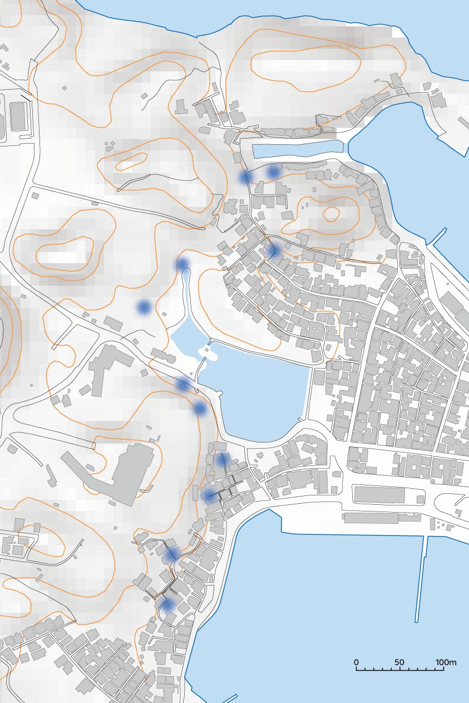
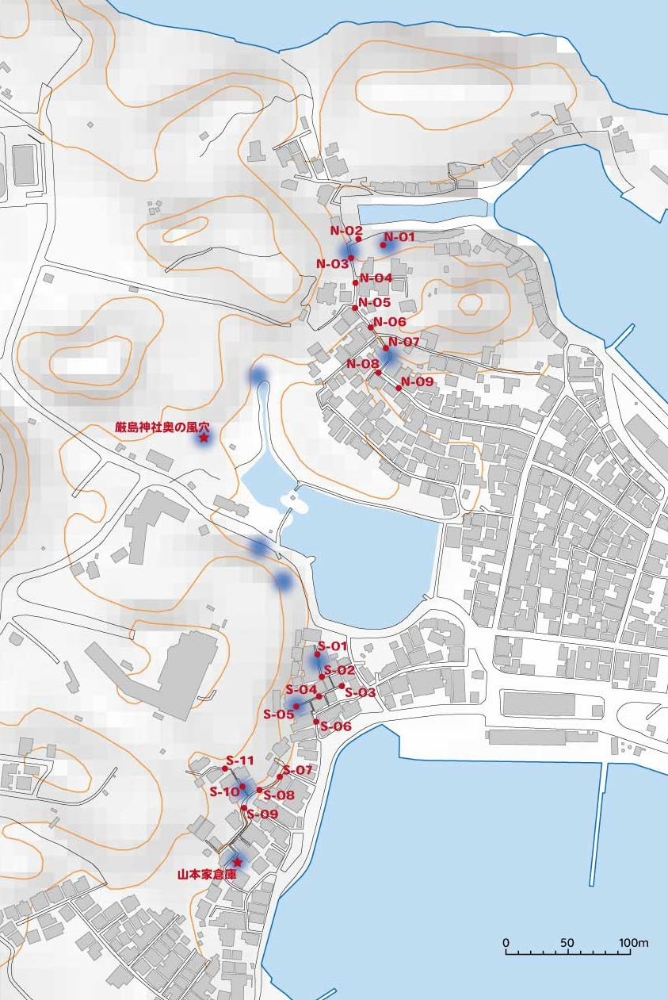

フィールドラボ
HAGI GEOPARK FIELD LAB
≡
成果物
風穴ラボ
砂浜ラボ
溶岩ラボ
風穴ラボ
＞
ヒエヒエモニタリング
成果物 ｜ 累積・常に最新
笠山・風穴ヒエヒエ
モニタリング
8
地点
SOURCE ／ ヒヤシ（2026.7.6設置）
20
地点
INFLUENCE ／ アナログ測定
2025.8.9
LAST ANALOG SURVEY
SOURCE // 源流
冷気源ロガーの連続観測
正式設置 2026.7.6〜 ／ 8 UNITS
10
15
20
25
℃
0h
12h
24h
36h
48h
経過時間（連続観測イメージ）
SAMPLE ／ データ取得中
01 椙本家ヒヤシ（北）
02 A家ヒヤシ（北）
03 B家ヒヤシ（南）
04 厳島神社奥の風穴（東）
05 旧漁港女性部出店ヒヤシ（北）
06 C家外（東）
07 D家ヒヤシ（東）
08 山本家倉庫ヒヤシ（東）
SAMPLE ／ 実データ取得中
INFLUENCE // 影響
アナログ空間測定
20地点の温度から描いた分布図。青いほど冷たく、オレンジほど暖かい。*は風穴のある場所

聞き取りで判明したヒヤシ（風穴）の分布

温度計を設置した20地点（N-01〜09／S-01〜11）
このアナログ測定の詳しい記録はこちら
第1回 調査レポート（2025.8.9）を見る ›
‹ 風穴ラボにもどる